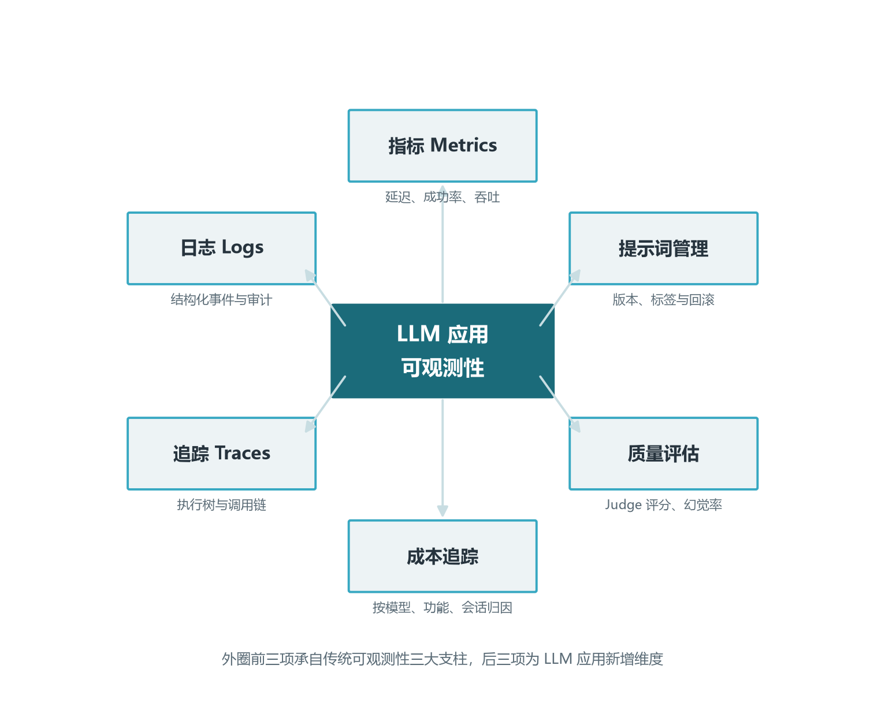
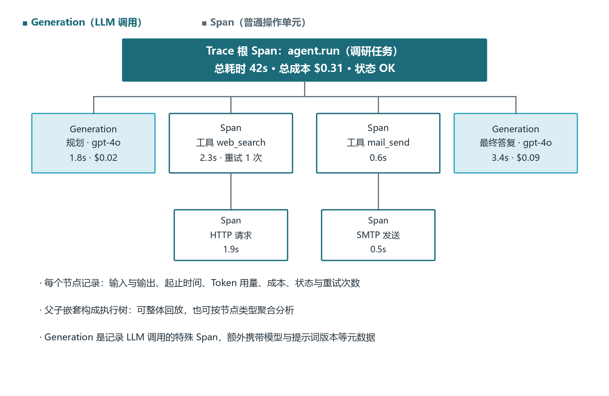
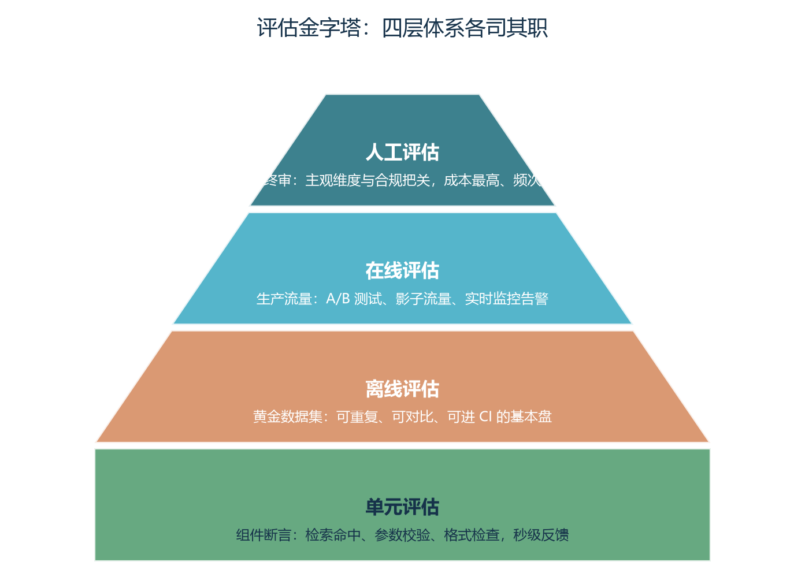
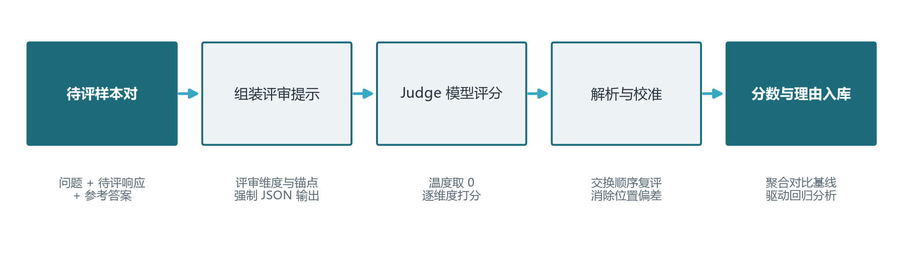
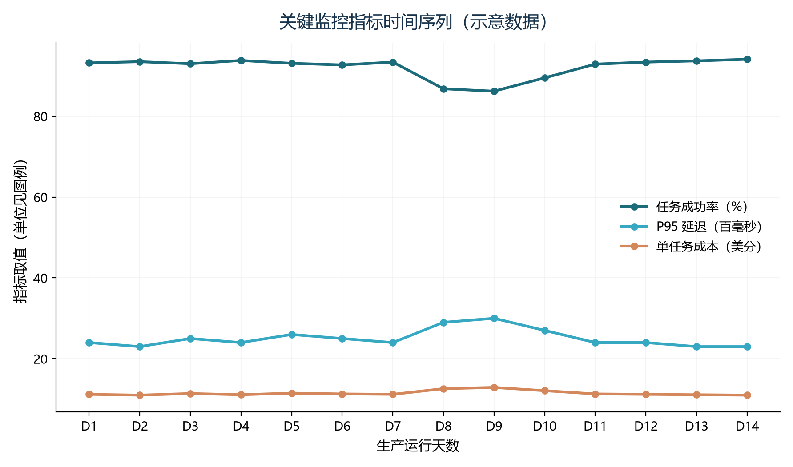
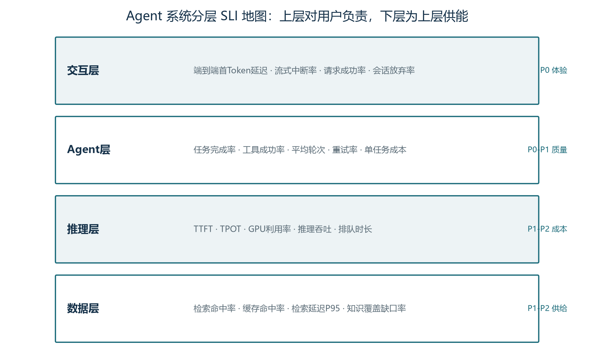
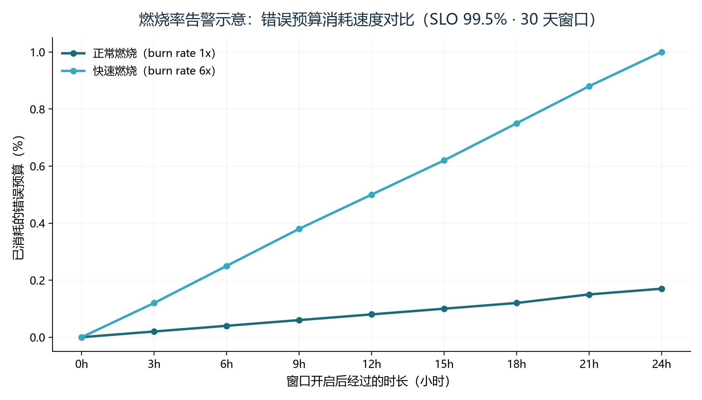

前言：从能跑到敢用的工程分水岭
欢迎来到《Agent 开发工程师修炼手册》卷十五。前十四卷我们一路从模型原理（卷二到卷六）走到 Agent 器官（卷七到卷十二）再到系统协作（卷十三到卷十四），主线一直是"如何让 Agent 具备能力"。但当一个 Agent 真的进入生产、被真实用户使用、每天处理成百上千次请求时，工程师的工作重心会发生一次静悄悄的迁移：从"让它能做"转向"让它一直能稳定地做"。这次迁移的分水岭，就是可观测性与评估体系。本卷要讨论的，正是这道分水岭两侧的全部工程问题。
一个让人警醒的数字是：业内调研显示，超过六成的 Agent 项目在原型阶段表现亮眼，却在投产六个月内因"找不到原因的质量退化"、"无法解释的高账单"、"无法回放的合规事故"而被迫回滚或下线。这些失败极少来自模型能力本身，而几乎全部来自"看不见"。你看不见每一次调用的成本构成，看不见一次失败任务内部的五十次工具调用到底哪一步出错，看不见一个提示词小改带来的质量回归，看不见一次用户投诉对应的真实执行轨迹——于是决策全凭直觉，故障全凭猜测，事故全凭运气。
可观测性解决的是"看见"的问题。它把传统监控的三大支柱（指标、日志、追踪）扩展到 LLM 应用特有的成本、质量、提示词版本与会话级行为，让工程师像查看分布式系统调用链一样看清 Agent 的每一步执行。评估体系解决的是"度量"的问题。它把"这个 Agent 好不好"这个含糊的问题，翻译成可量化、可对比、可回归测试、可入 CI 门禁的指标体系，让每一次提示词改动、每一次模型切换、每一次版本升级都有量化证据。
本卷不重复前面各卷关于模型原理、RAG、工具调用的细节，而是把这些能力"组件"装配到生产线上时所需的工程基建集中讲透。学完之后，你将能够为一个生产级 Agent 设计可观测体系与评估闭环：知道每一步发生了什么，知道每次变更带来了什么影响，知道每次事故如何回溯与修复。
学完本卷，你将能够：
- 用全链路追踪体系把 Agent 的执行过程结构化为可回放的 Trace 树，能像查分布式调用链一样定位故障；
- 在 LangSmith、Langfuse、Phoenix、Helicone 等主流可观测平台之间按场景做选型，理解它们的能力、定位与适配边界；
- 设计覆盖模型/工具/用户/会话/功能多维度的成本归因看板，建立预算与告警机制；
- 搭建评估金字塔四层体系（单元、离线、在线、人工），把评估左移到开发流程并接入 PR 门禁；
- 用 LLM-as-a-Judge 设计评审流程，理解位置/长度/自我偏好等偏差并掌握校准方法；
- 用 SWE-bench、GAIA、WebArena 等公共基准与内部黄金集组合刻画 Agent 能力画像，建立评估驱动的反馈闭环。
本卷与卷五（推理服务）、卷七（上下文工程）、卷十（工具与 MCP）、卷十二（规划推理）联系紧密。卷五讲过推理优化的成本结构，本卷会把它纳入成本归因的总账；卷七讨论过上下文组装策略，本卷会把上下文压缩效果纳入评估指标；卷十二讲过循环控制与错误恢复，本卷的 Trace 树正是这些机制在生产端的具象化。卷十六（安全与生产部署）是本卷的自然延伸——本卷讨论"如何看见与度量"，卷十六讨论"在生产中如何不被击垮"。建议先学本卷打基础，再进卷十六。
第一章 为什么 LLM 应用需要全生命周期可观测性
1.1 从传统监控到 LLM 可观测的跃迁
传统软件系统的监控围绕指标（Metrics）、日志（Logs）、追踪（Traces）三大支柱构建。指标帮助团队了解系统健康状态——CPU 使用率、内存占用、QPS、P99 延迟、错误率；日志记录系统运行中的事件，用于排错与审计；追踪刻画分布式系统中请求的传播路径，定位性能瓶颈与故障点。这套体系在处理确定性、结构化、状态明确的系统时极为有效，过去二十年支撑了从单机应用到微服务架构的整个工程化进程。
然而，LLM 应用有四个与传统软件截然不同的特征，让这套经典体系力不从心。第一是非确定性：同样输入在不同时刻可能产生不同输出，传统的"接口契约=输入输出对等"假设失效。第二是多步骤复杂性：一个用户问题可能经过意图识别、检索、重排序、提示词组装、生成、解析、后处理等多个环节，每个环节都可能引入错误。第三是成本结构非线性：计费不仅取决于调用次数，还与输入输出 Token、缓存命中、模型选择、工具调用次数等多因素相关。第四是质量评估的主观性：没有"对错"的客观标准，需要借助人工评估、LLM-as-a-Judge、引用准确率等方法。
这四点意味着，传统监控只能回答"系统是否正常运行"，却无法回答"模型输出是否正确"、"成本花在哪里"、"提示词变化是否影响了质量"等关键问题。LLM 可观测性因此成为独立的、快速发展的工程领域：它在传统三大支柱之上，引入了成本归因、质量评估、提示词管理、会话分析、实验对比、漂移监控等新维度。从传统监控到 LLM 可观测的跃迁，本质是从"机器是否在跑"到"系统是否在按业务目标运转"的视角升级。

1.2 全生命周期治理的四大目标
LLM 应用的可观测性服务于全生命周期治理——从开发、测试、部署到运维的每个阶段，都建立可控、可观测、可优化的流程。把这套体系拆开看，工程师需要同时回答四个层次的问题。第一层是排障类问题：一次任务为何失败？哪一步耗时异常？哪个工具超时？这要求全链路追踪能力，把每次请求的内部结构完整还原。第二层是质量类问题：模型输出是否正确？幻觉率有多高？不同提示词版本的质量差异有多大？这要求系统化的评估能力，把主观判断翻译成可量化的指标。
第三层是成本类问题：钱花在哪儿？哪个功能最烧钱？切换模型能省多少？这要求细粒度的成本归因能力，把月度账单拆分到单次调用、单个用户、单个会话。第四层是合规类问题：一次事故能否回放？提示词变更是否留痕？敏感信息是否泄露？这要求审计与回溯能力，把每次执行的上下文、参数、版本号完整记录。这四层问题不是孤立的：成本异常往往伴随质量问题，质量事故往往需要排障定位，合规审计又必须建立在完整追踪之上。优秀的可观测体系不是单点工具的堆砌，而是让这四层在数据层贯通。
这四层目标在工程实践中往往由不同岗位负责。排障主要由平台工程师与 SRE 承接，他们关注延迟、错误率、链路；质量主要由算法工程师与领域专家承接，他们关注准确率、相关性、幻觉率；成本主要由财务与产品经理承接，他们关注单位成本与 ROI；合规主要由法务与安全团队承接，他们关注留痕与审计。理解这一点有助于在团队内部建立共同语言：一个看似简单的质量告警，可能牵动四个团队的协同响应。
1.3 可观测性面临的五大工程挑战
把可观测性从理念落地到工程，会撞到五类具体的挑战。第一是数据形态的复杂性。LLM 应用产生的数据不仅有传统数值指标，还有大量半结构化文本——提示词、模型回复、检索文档、工具参数、对话历史。一个中型 Agent 应用每天可能产生数 GB 乃至数十 GB 的可观测数据，对存储、查询、可视化都提出更高要求。
第二是跨轮次关联的困难。传统应用的一次请求对应一次响应，而 LLM 应用中的对话与 Agent 执行可能跨越多个轮次，持续数分钟甚至数小时。需要把同一用户的多次交互、同一 Agent 执行中的多个步骤关联起来，才能理解完整的行为模式。第三是成本归因的粒度不足。许多团队只能看到月度账单上的总支出，却无法知道每个功能、每个用户、每次会话具体花费了多少。没有细粒度的归因，就无法优化成本结构。
第四是评估标准的不统一。LLM 输出的质量评估涉及主观判断与复杂标准。不同团队可能用不同的指标与方法，导致评估结果难以比较与复现。需要建立系统化的评估框架，把 LLM-as-a-Judge、代码评估、人工评估结合起来。第五是工具选型的多样性。市场上存在大量 LLM 可观测性工具——LangSmith、Langfuse、Phoenix、Helicone、Traceloop、Braintrust 等，每个工具的定位、集成方式、部署模式各不相同。团队需要根据自身技术栈、数据安全要求与预算做出选择。
这五类挑战不是孤立的技术问题，而是相互牵连的工程系统问题。数据形态复杂要求平台架构合理；跨轮次关联要求标识符体系贯穿；成本归因要求事件 Schema 统一；评估标准要求工具链协同。没有整体观的头痛医头式建设，往往在生产中频繁翻车。
1.4 LLM 可观测性vs传统可观测：四组关键差异
把传统可观测性与 LLM 可观测性并排放在一起看，可以提炼出四组关键差异。第一组是"确定性vs概率性"。传统系统的每次调用都可以被反复重现，错误通常有确定的根因；LLM 应用即使在温度=0 的设置下，不同厂商、不同版本的模型也可能有微小差异，且同一模型对同一输入在不同上下文窗口下行为也不同。工程师必须接受"概率性系统"这一前提，在评估体系中引入多次采样与置信区间。
第二组是"接口契约vs语义契约"。传统系统的接口契约是结构化的输入输出 Schema，输入字段缺失或类型错误会被立即拒绝；LLM 应用的语义契约是模糊的——输出可能相关也可能跑题，可能正确也可能包含微小的虚构。这要求评估机制具备语义理解能力，而不是依赖精确匹配。第三组是"可重放vs可重建"。传统系统的故障可以通过重放相同请求复现；LLM 应用的故障很难完全复现，因为模型版本、温度、历史上下文都会影响结果。工程师要习惯于"通过 Trace 重放当时的所有上下文"，而不是"通过重复请求复现问题"。
第四组是"单元成本固定vs单元成本可变"。传统系统的每次接口调用通常按固定费率计费；LLM 应用的每次调用成本与 Token 数量、缓存命中、模型版本强相关。同一段代码，仅因为上下文多塞了 1000 Token 就可能贵上 30%。成本治理必须建立在细粒度计量之上，而不是简单的调用次数统计。
1.5 本卷的研究范围与章节地图
本卷围绕 LLM 应用的可观测性与评估体系展开，重点覆盖六大主题。第一是全链路追踪的核心概念（Trace、Span、Generation）与 OpenTelemetry 语义约定；第二是主流可观测平台的能力对比与选型方法论（LangSmith、Langfuse、Phoenix、Helicone）；第三是成本归因的工程实现，从事件 Schema 到看板设计；第四是会话级分析与跨轮次失败模式的根因方法；第五是提示词版本控制与 CI/CD 集成；第六是评估体系的金字塔四层结构与 LLM-as-a-Judge 方法论。
章节组织遵循"先原理后工程、先局部后整体"的递进逻辑。第一章回答"为什么需要"；第二章回答"追踪是什么"；第三章回答"用什么工具"；第四章回答"如何精细化管成本"；第五章回答"如何设计评估体系"；第六章回答"如何用基准测试与 Judge 模型驱动持续优化"。最后一章是评估驱动的反馈闭环，把所有零件组装成可持续运转的系统。
第二章 全链路追踪：核心概念与执行树
2.1 为什么需要全链路追踪
一个看似简单的 LLM 应用，背后可能隐藏着复杂的执行流程。以 RAG 问答系统为例，用户提问后通常执行以下步骤：将问题转换为向量、在向量数据库中检索、对检索结果重排序、根据排序后的文档与提示词模板构建最终提示、调用 LLM 生成答案、对答案格式化和后处理、将结果返回给用户。在这个过程中任何一步出问题都会影响最终答案的质量。
如果没有全链路追踪，开发者只能通过打印日志或查看最终输出来判断系统是否正常。但日志通常是分散的、非结构化的，无法直观展示步骤之间的因果关系与层级结构。全链路追踪将每次请求的所有步骤组织成一棵执行树，开发者可以清晰地看到每个步骤的输入、输出、耗时、Token 消耗与状态，从而快速定位问题。
全链路追踪的价值不仅体现在故障排查上，还体现在持续优化上。通过分析大量追踪数据，团队可以发现哪些步骤耗时最长、哪些检索结果经常不相关、哪些模型调用成本最高、哪些提示词版本效果更好。这些数据驱动的洞察是优化 LLM 应用的基础。一次完整的优化循环是：发现异常→关联上下文→定位根因→优化策略→验证效果→持续监控。任何一环缺少数据支撑，整个循环都会退化为主观猜测。
2.2 Trace、Span 与 Observation 的概念模型
全链路追踪中有三个核心概念：Trace、Span 与 Observation。Trace 代表一次完整的端到端操作。在 LLM 应用中，一个 Trace 通常对应一次用户请求或一次 Agent 执行流程。例如用户问"如何使用 LangChain 构建 RAG 应用"，从接收问题到返回答案的整个过程就构成一个 Trace。每个 Trace 有唯一的 Trace ID，用于关联属于同一请求的所有步骤。
Span 代表 Trace 中的一个单独操作单元，可以是向量检索、重排序、模型调用、工具调用、数据库查询等。每个 Span 都有自己的 Span ID、名称、开始时间、结束时间、状态、属性与可能的错误信息。Span 之间可以形成父子关系，父 Span 包含子 Span，从而构成层级化的执行树。Observation 是 Langfuse 等工具中使用的术语，泛指对应用行为的观测记录。Generation 是 Observation 的一种特殊类型，专门用于记录 LLM 调用。Generation 通常包含模型名称、输入消息、输出消息、Token 使用量、成本、延迟等 LLM 特有的元数据。
这种三层结构既提供了高层次的概览，又支持深入细节的排查。想看整个会话流程，查看 Trace；想调试某个具体决策点，聚焦 Run/Span；想检查提示词与响应，查看 Call/Generation。这种"宏观到微观"的分层视野，是任何调试工具的核心设计模式。

2.3 执行树的嵌套结构与聚合分析
LLM 应用的执行通常具有强烈的嵌套性。一个 Agent 可能在顶层调用一个 LLM，LLM 决定调用某个工具，工具执行过程中又可能调用另一个 LLM 或数据库，如此层层嵌套。执行树通过父子 Span 关系精确地刻画了这种嵌套结构。它支持三类关键能力。
- 整体结构可视化：它展示了请求的整体形态，而不是将每个调用视为孤立事件。开发者一眼看出这次任务调用了几次 LLM、几次工具、有没有异常分支。
- 聚合分析：可以计算每个 Agent 执行中工具调用的平均次数、每次对话中 LLM 调用的总成本、每次检索步骤的平均耗时。
- 上下文传播：在分布式系统中，Trace ID 需要在不同服务之间传递，才能将跨服务的调用关联到同一个 Trace 中。
在实现执行树时，需要注意上下文管理。许多框架通过上下文变量或装饰器自动传递 Trace 与 Span 上下文。开发者只需在关键函数上添加装饰器，框架就会自动创建 Span 并放入正确的层级位置。例如 Langfuse 的 @observe 装饰器、LangSmith 的 @traceable 装饰器、OpenTelemetry 的 @tracer.start_as_current_span 都提供了类似能力。装饰器模式大幅降低了接入成本，把"记得埋点"变成"埋点默认开启"。
2.4 OpenTelemetry 与 LLM 语义约定
OpenTelemetry（OTel）是一个开源的可观测性框架，提供统一的标准来收集、导出与分析分析遥测数据。它最初主要面向传统微服务架构，但近年来已扩展到 LLM 与生成式 AI 领域。OpenTelemetry 的核心组件包括：API（定义如何创建 Trace 与 Span）、SDK（实现数据采集与导出）、Collector（聚合与转发遥测数据）、语义约定（定义标准化的属性名称）。
对于 LLM 应用，OpenTelemetry 正在制定 GenAI 语义约定，以统一 LLM 调用相关的属性命名。这些约定包括：gen_ai.system 表示模型供应商（openai、anthropic、google 等）；gen_ai.request.model 表示请求的模型名称（gpt-4o、claude-sonnet-4.6 等）；gen_ai.usage.input_tokens 与 gen_ai.usage.output_tokens 分别表示输入输出 Token 数；gen_ai.request.temperature 表示采样温度。除了模型调用，OpenTelemetry 还针对向量数据库、工具调用、Agent 等场景制定了语义约定，例如 db.system 表示向量数据库类型，db.vector.query.top_k 表示检索的 Top-K 值，tool.name 与 tool.arguments 表示工具调用的名称与参数。
OpenTelemetry 的最大优势是供应商中立。无论使用哪种模型、框架、可观测性后端，只要遵循 OpenTelemetry 语义约定，就可以实现跨平台互操作。LangSmith 与 Langfuse 都支持接收 OpenTelemetry 格式的数据，Arize Phoenix、Traceloop、Datadog、Grafana、Jaeger 也都支持。这意味着团队可以在不修改应用代码的情况下切换可观测性后端，降低供应商锁定风险。这是一种"工具可换、数据可迁"的工程契约。
2.5 自动追踪与手动追踪的协同
在 LLM 应用中实现追踪有两种主要方式：自动追踪与手动追踪。自动追踪通常由框架或 SDK 提供，无需修改业务逻辑即可启用。例如使用 LangChain 时只需设置环境变量 LANGSMITH_TRACING=true，LangChain 就会自动将每次 LLM 调用、Retriever 调用、Chain 调用与 Agent 步骤发送到 LangSmith。使用 Langfuse 的 OpenAI 包装器时，只需将 openai 模块替换为 langfuse.openai，所有 OpenAI 调用就会自动被追踪。自动追踪的优势是集成简单、覆盖全面，适合快速接入与通用场景。
手动追踪则由开发者显式创建 Trace、Span 与 Generation，适合需要精细控制追踪内容、自定义属性与层级关系的场景。例如当系统需要追踪自定义的检索算法、业务逻辑或外部 API 调用时，自动追踪可能无法覆盖，此时需要手动添加追踪代码。手动追踪通常通过装饰器或上下文管理器实现。
自动追踪与手动追踪并不互斥。生产环境中通常同时使用两种方式：自动追踪覆盖通用框架与模型调用，手动追踪覆盖自定义逻辑与关键业务步骤。这种组合既保证了接入速度，又保证了关键路径的可观测深度。
第三章 平台工具链：可观测性平台全景与选型
3.1 LLM 可观测性工具生态概览
当前市场上的 LLM 可观测性工具可以分为四类：商业托管型（LangSmith）、开源自托管型（Langfuse、Phoenix）、AI 网关型（Helicone）、通用 APM 扩展型（Datadog、New Relic 通过 OpenTelemetry 集成）。这些工具在底层往往共享 OpenTelemetry 与 GenAI Semantic Conventions，但在产品形态、部署模式、专精方向上各有侧重。
LangSmith 是 LangChain 团队推出的 AI Agent 工程平台，定位为 LLM 应用与 Agent 的全生命周期开发、评估、部署与观测工具。它与 LangChain 和 LangGraph 生态深度集成，同时也支持通过 Python、TypeScript、Go、Java SDK 与 OpenTelemetry 接入任何框架。LangSmith 的核心功能包括：可观测性（Tracing）、评估（Evaluation）、提示词管理（Prompt Hub）、部署（Deployment）与 Polly AI 调试助手。它的竞争优势在于与 LangChain/LangGraph 的原生集成——对于使用 LangChain 构建 Chain 或 LangGraph 构建 Agent 的团队，启用追踪几乎不需要修改代码，只需配置几个环境变量。
Langfuse 是一个开源的 LLM 工程平台，目标是帮助团队协同调试、分析和迭代 LLM 应用。它采用 MIT 许可证，核心功能全部开源，支持自托管与托管云两种部署模式。Langfuse 的核心模块包括可观测性、提示词管理、评估、数据集与实验、分析仪表板。它最大的特色是开源与 OpenTelemetry 原生。截至 2026 年，Langfuse 在 GitHub 上已获得超过 2.7 万颗星，每月 SDK 安装量超过 5000 万次，是开源 LLM 可观测性领域最广泛采用的平台之一。
Arize Phoenix 是由 Arize AI 推出的开源 AI 可观测性平台，专注于 LLM 应用、RAG 系统与 Agent 的调试与评估。Phoenix 基于 OpenTelemetry 与 OpenInference 标准构建，可以在本地 Jupyter Notebook、Docker 容器或 Kubernetes 集群中运行。它的核心优势在于对 RAG 场景的深入支持，包括检索质量评估、嵌入可视化、幻觉检测、忠实度评估等。
Helicone 是一个开源的 AI 网关与 LLM 可观测性平台。它的核心定位是通过代理模式（Proxy Mode）为 LLM 应用提供极低接入成本的可观测性。开发者只需将 LLM API 的 base URL 改为 Helicone 的代理地址，即可在几乎不修改代码的情况下获得请求记录、成本追踪、延迟分析、会话追踪等功能。Helicone 特别适合使用多个模型提供商、需要快速接入可观测性、希望通过网关实现缓存和限流、重视成本追踪的团队。
3.2 LangSmith：零代码接入与完整闭环
LangSmith 最便捷的特性是零代码侵入的追踪能力。开发者只需设置以下环境变量：LANGSMITH_TRACING=true、LANGSMITH_ENDPOINT、LANGSMITH_API_KEY、LANGSMITH_PROJECT。设置后所有 Chain、Agent、Retriever、LLM 调用都会被自动追踪。对于非 LangChain 应用，LangSmith 也提供了简单的追踪方式：通过 wrap_openai 包装 OpenAI 客户端，并使用 @traceable 装饰器，可以追踪原始 OpenAI 调用。
LangSmith 的 Trace、Run 与 Call 三层结构提供了从宏观到微观的完整视野。Trace 是最高层级抽象，代表一次完整的交互或操作；Run 是 Trace 内部的一个步骤；Call 是 Run 内部的实际 LLM 或 API 调用。这种三层结构既提供了高层次概览，又支持深入细节排查。
Annotation Queues（标注队列）是 LangSmith 一个重要但常被忽视的功能。它允许团队将生产中的 Trace 或模型输出加入队列，由人工或自动化流程进行评分、标注与反馈。典型应用场景包括：质量评估（领域专家进行人工评分）、数据集构建（生产中的真实交互是评估数据集的宝贵来源）、A/B 对比（Pairwise Annotation Queues 允许将两个不同模型或提示词版本的输出并排放置）。
Polly 是 2025 年底 LangSmith 推出的 AI 调试助手。它能够理解 Agent 架构、识别失败模式，并帮助开发者调试 Trace、分析对话与优化提示词。Polly 提供三种能力：调试单个 Trace（分析单次 Agent 执行）、分析完整对话（在 Thread 视图中跨越多轮甚至数小时的对话历史）、优化提示词（在 Prompt Playground 中用自然语言描述期望行为，Polly 自动更新系统提示词）。
3.3 Langfuse：开源自托管与 OpenTelemetry 原生
Langfuse 是开源 LLM 可观测性领域最广泛采用的平台之一。它的架构由应用容器（Web、Worker）、存储组件（PostgreSQL、ClickHouse、Redis、S3）以及可选的 LLM API/网关组成。Langfuse v3 架构的重大升级是引入了 ClickHouse 与异步事件处理。在 v2 版本中 Langfuse 使用 PostgreSQL 存储所有数据，当数据量达到数亿行时查询与聚合性能出现瓶颈。v3 将分析型数据迁移到 ClickHouse，利用列式存储与向量化查询，支持每秒处理数百个事件，同时保持良好查询性能。
自托管 Langfuse 可以通过 Docker Compose 快速启动（适合测试与中小规模部署），也可以通过 Kubernetes Helm、AWS Terraform、Azure Terraform、GCP Terraform 等方式部署到生产环境。所有基础设施组件必须设置为 UTC 时区，否则查询可能返回错误结果。这种细致的工程细节是生产可观测系统的成熟标志。
Langfuse 的追踪模型与 OpenTelemetry 概念基本一致，但使用了一些特定术语。Trace 是一次完整的操作流程，包含多个 Observation；Observation 包括 Span 与 Generation 两种类型；Generation 是 Span 的子类，专门用于记录 LLM 调用。Langfuse 的 @observe 装饰器非常强大，它不仅可以自动追踪函数执行，还能将嵌套函数调用组织成层级结构——所有被 @observe 装饰的函数内部如果有其他被装饰的函数调用，它们会自动关联到同一个 Trace 中。
2025 年 Langfuse 全面采用 OpenTelemetry，提供了 OpenTelemetry 端点，可以直接接收 OTLP 格式的数据。对于使用 OpenTelemetry SDK instrument 的应用，只需将 exporter 指向 Langfuse 的 OTLP 端点即可，无需额外集成 Langfuse SDK。这种 OpenTelemetry 原生支持使 Langfuse 能够无缝融入企业现有的可观测性体系——例如可以将 LLM 追踪发送到 Langfuse，同时将基础设施指标发送到 Datadog 或 Prometheus，实现统一的可观测性视图。
3.4 Phoenix：RAG 评估与本地调试
Phoenix 完全基于 OpenTelemetry 构建，支持通过 OTLP 协议接收追踪数据。它还支持 OpenInference 标准，这是一套专门为 LLM 应用设计的语义约定，涵盖了模型调用、检索、嵌入、工具调用等场景。由于 Phoenix 支持 OpenTelemetry，任何遵循 OTel 规范的框架都可以向其发送数据，提供了对 LangChain、LlamaIndex、DSPy、Haystack、CrewAI、OpenAI Agents SDK、Vercel AI SDK 等框架的 first-class instrumentation 支持。
Phoenix 提供了一系列预构建的评估指标，专门用于衡量 RAG 系统的检索与生成效果。检索质量指标包括 Context Precision（上下文精确率）、Context Recall（上下文召回率）、NDCG、MRR、Precision@K 与 Recall@K。生成质量指标包括 Faithfulness（忠实度）、Hallucination（幻觉）、Relevance（相关性）、Q&A Correctness（问答正确性）、Toxicity（毒性）与 PII 检测。这些指标可以通过 LLM-as-a-Judge 或传统信息检索方法计算。
Phoenix 的嵌入可视化功能是其独特优势之一。在 RAG 系统中，嵌入质量直接影响检索效果。Phoenix 可以将文档块与查询向量投影到二维或三维空间，帮助开发者发现以下问题：相关文档是否聚集在一起（如果不聚类说明嵌入模型可能不适合当前领域）；用户查询与相关文档在向量空间的距离是否足够近；是否存在明显异常的离群点（可能是数据质量问题或错误分块导致）。通过嵌入分析，团队可以优化文档分块大小、重叠策略、嵌入模型选择与向量数据库索引参数，从而提升检索质量。
3.5 Helicone：代理模式与 AI 网关
Helicone 最显著的特点是代理模式集成。以 OpenAI 为例，只需修改两行配置——将 base URL 改为 Helicone 代理地址，并在 default_headers 中添加 Helicone-Auth 即可。所有后续的 OpenAI 调用都会经过 Helicone 代理，记录请求与响应内容、模型名称、Token 使用量、延迟、成本，以及自定义的 Header 元数据。这种"零代码侵入"的体验与 LangChain 的自动追踪类似，但适用范围更广（任何 OpenAI 兼容 API 都可以）。
Helicone 代理的架构带来了额外能力：由于所有请求都经过 Helicone，它可以提供缓存、限流、负载均衡、自动故障转移等网关功能。缓存支持精确匹配与语义匹配（语义缓存），适合 FAQ、知识库等场景；限流可以在请求到达模型供应商之前执行速率限制，按用户、API Key 或全局生效，按请求数、Token 数或成本进行限制。
需要注意的是 Helicone 代理模式会引入额外的网络跳数，通常增加 5 到 30 毫秒延迟，对于实时性要求极高的应用需要评估。此外所有流量经过 Helicone 服务器，对数据隐私敏感的场景建议选择自托管。Helicone 支持通过 Docker 与 Kubernetes 自托管，可以消除数据出境与供应商锁定的顾虑。
3.6 评估框架：Ragas、DeepEval 与提示词回归测试
可观测平台解决"看得见"，评估框架解决"判得准"。两者的分工值得先厘清：LangSmith、Langfuse 这类平台的核心是把运行轨迹、成本、延迟、人工标注集中起来（本章前几节），它们内置的评估能力偏"通用而轻量"；而专职评估框架的价值在于把评估变成可编程的断言与可重复的流水线——写用例、跑批量断言、接入 CI、按版本对比，像写单元测试一样写 LLM 评估。生产团队通常两者并用：平台管观测与人工评审，框架管自动回归。
Ragas 是 RAG 专用评估框架的代表。它把 RAG 系统的质量拆成四个可自动计算的指标：忠实度（Faithfulness）——答案的每个论断是否都能在检索到的上下文里找到依据（衡量幻觉）；答案相关性（Answer Relevancy）——答案是否切题；上下文精确率（Context Precision）——检索到的片段里有多少真正有用；上下文召回率（Context Recall）——回答所需的信息有多少被检索回来。四个指标正好对应检索与生成两段链路，定位问题非常直接：召回率低就回去修检索（卷08/卷09），忠实度低就检查提示词与拒答逻辑。Ragas 用 LLM-as-Judge 自动打分（关键指标可用人工标注校准），与 LangChain / LlamaIndex 集成顺畅，是 RAG 项目建立第一套回归指标的最短路径。
DeepEval 的定位是"LLM 应用的单元测试框架"——熟悉 pytest 的话，它就是那套心智的迁移：用断言式写法组织测试、用指标类（幻觉、答案相关性、偏见、毒性、工具调用正确性等十余种）给用例打分、支持多轮对话测试与红队攻击模拟，一条命令跑完整套评估并输出报告。它的价值在工程化的严谨：评估用例进代码仓库、随 CI 一起跑、每个提示词或模型变更都过门禁（与本卷第六章"评估驱动开发"的闭环直接衔接）。promptfoo 则专攻提示词与模型对比：用 YAML 声明一批用例与多个候选提示词/模型，批量执行后生成对比矩阵，适合"换模型、改提示词前后到底差多少"这类高频决策。三者与可观测平台的关系可以一句话概括：平台是仪表盘，框架是质检线——仪表盘告诉你系统状态，质检线决定产品能不能出厂。
| 框架 | 定位 | 核心能力 | 最适合 |
|---|---|---|---|
| Ragas | RAG 专用评估 | 忠实度 / 答案相关性 / 上下文精确率 / 召回率四指标 | 为 RAG 系统建立回归基线 |
| DeepEval | LLM 应用单元测试 | 断言式测试、十余种指标、多轮对话与红队 | 把评估接入 CI，做发布门禁 |
| promptfoo | 提示词与模型对比 | YAML 用例矩阵、多提示词与多模型并排对比 | 换模型、改提示词的效果验证 |
| 平台内置评估（LangSmith / Langfuse 等） | 观测 + 轻量评估 | 数据集、人工标注、在线评分 | 团队协作与线上质量监控 |
落地路径建议按"先指标、后门禁"推进：第一周用 Ragas（或平台内置评估）给现有系统建 20 到 50 条黄金用例、跑出基线分数；第二周把用例迁进 DeepEval 这类框架、接入 CI 让它变成合并门禁；此后每次提示词、模型、检索参数的变更都必须过门禁——这正是第五章"评估左移"理念的工具化落地。最后记住一个反直觉的经验：评估框架本身也需要维护——用例集会腐化（业务变了、答案过时、语料更新），每季度审计一次用例，比不断更换新工具重要得多。
3.7 主流平台能力对比表
下表汇总了 LangSmith、Langfuse、Phoenix 与 Helicone 四款主流工具的核心能力差异，便于选型参考。
| 维度 | LangSmith | Langfuse | Phoenix | Helicone |
|---|---|---|---|---|
| 部署方式 | SaaS 与企业自托管 | 开源自托管加云服务 | 开源自托管加云服务 | 开源自托管加云服务 |
| 开源协议 | 专有 | MIT | Apache 与 BSD | Apache 2.0 |
| 追踪方式 | 环境变量、SDK、OpenTelemetry | SDK、OpenTelemetry、LLM 网关 | OpenTelemetry、OpenInference | 代理模式改 base URL |
| 提示词管理 | Prompt Hub，版本控制，标签部署 | 版本控制，标签部署 | 较弱 | 基础版本管理 |
| 评估能力 | LLM-as-a-Judge、代码评估、人工标注 | LLM-as-a-Judge、人工标注、自定义评估 | 强 RAG 评估、嵌入分析 | 较弱 |
| 成本追踪 | 统一成本追踪 | 成本追踪 | 成本追踪 | 精确定价，强成本追踪 |
| 最佳场景 | LangChain 与 LangGraph 生态 | 开源自托管综合平台 | RAG 调试与数据科学 | 快速接入网关与成本 |
| 层级 | 执行时机 | 反馈时延 | 主观性 | 成本 | 可入 CI |
|---|---|---|---|---|---|
| 单元评估 | 每次提交 | 秒级 | 客观 | 极低 | 可 |
| 离线评估 | 每次 PR | 分钟到小时 | 较客观 | 中 | 可 |
| 在线评估 | 生产流量 | 持续 | 半客观 | 较高 | 否 |
| 人工评估 | 季度或专项 | 天到周 | 主观 | 高 | 否 |
选型建议：如果团队主要使用 LangChain 或 LangGraph，优先选择 LangSmith，追踪几乎零配置；如果重视开源、自托管与数据主权，优先选择 Langfuse；如果主要从事 RAG 系统开发与数据科学实验，优先选择 Phoenix；如果希望最低成本接入或需要 AI 网关能力，优先选择 Helicone。在实际项目中也可以组合使用多款工具，关键是建立统一的数据 Schema 与 Trace ID 体系，确保不同工具之间的数据可以关联。
3.8 平台落地的四步方法论
把可观测平台从选型推到生产，需要遵循四步方法论。第一步是 PoC 验证：在 1-2 周内选择一个代表性业务场景，把候选平台接入并跑通完整链路（追踪、评估、成本归因），对比各平台的开发体验与功能完整度。第二步是数据 Schema 设计：基于 OpenTelemetry 语义约定与 GenAI 扩展，统一内部的事件结构，确保即使切换平台也不需要重写埋点代码。
第三步是渐进式灰度：从一个非关键业务开始接入，验证平台在真实流量下的稳定性与查询性能，再逐步扩展到核心链路。每扩展一个业务线都需要回顾评估：追踪数据是否完整、查询是否高效、告警是否及时。第四步是闭环建立：把可观测平台与评估体系、CI/CD、告警系统打通，让追踪数据自动流入评估、告警自动触发回滚、评估结果自动入库形成长期趋势图。
这四步不是一次性项目，而是持续运营的工程。平台版本会升级、API 会演进、模型会切换——每一步变更都可能影响可观测性链条的完整性。建议每个季度做一次"可观测系统健康度检查"，包括 Trace 覆盖率、关键指标可用性、告警响应时间、平台版本对齐等指标。
第四章 成本归因：从模型到会话的精细化拆分
4.1 为什么成本归因至关重要
LLM 应用的成本结构与传统软件截然不同。传统软件的主要成本是计算资源与人力，LLM 应用的成本直接与模型调用相关，且每次调用的费用取决于输入 Token、输出 Token、模型选择、缓存命中、工具调用次数等多种因素。一个大型 Agent 应用可能每天调用数百万次模型，Token 价格从每百万 Token 几分钱到几十美元不等，成本波动可能非常剧烈。
成本归因的核心目标是回答：钱花在哪儿了？传统供应商账单只能给出月度总支出与按 API Key 的粗略拆分，无法告诉团队每个功能、每个用户、每次会话、每个工具调用具体花费了多少。没有这些信息，团队就无法识别浪费、优化模型选择、制定定价策略与控制预算。一个真实的案例是：某团队发现月度 OpenAI 账单暴涨 300%，但不知道原因。通过成本归因分析，他们发现某个新上线的 Agent 功能在循环中重复调用了昂贵的模型，且没有命中缓存。另一个案例是某产品按用户收费，但发现少数用户消耗了 80% 的 Token 成本，需要调整定价或限制使用。
成本归因的另一个隐性价值是建立技术与业务的共同语言。当工程团队能给出"这个功能每天消耗 12 美元、占月度预算的 3%"这样的具体数字时，与业务团队的对话从主观争论变成数据对话。这种共同语言是技术决策获得业务支持的关键。
4.2 成本归因的多维模型
精细化的成本归因需要从多个维度拆分成本。常见的维度包括六类。第一是模型维度：不同模型的价格差异可达 100 倍以上。例如 DeepSeek V4 Flash 可能每百万输入 Token 只需 0.14 美元，而 GPT-5.6 Pro 可能高达 30 美元。按模型拆分可以揭示是否使用了过高端模型处理简单任务。
第二是工具维度：Agent 与 RAG 系统不仅调用 LLM，还调用搜索引擎、数据库、向量检索、第三方 API 等。这些工具调用可能按查询次数、返回数据量或 API 调用计费。按工具拆分可以识别非模型成本。第三是用户维度：每个用户或每个用户群体的消耗是多少？这对于 SaaS 产品的成本控制与按量定价至关重要。
第四是会话语维度：一次完整对话或 Agent 执行流程的总成本是多少？会话级成本有助于理解用户体验的真实成本。第五是功能维度：产品中的不同功能（摘要、翻译、问答、代码生成）各自消耗多少？这有助于优化产品设计与资源分配。第六是环境维度：生产环境、测试环境、开发环境的成本分别是多少？避免测试与开发消耗过多生产预算。这六个维度不是非此即彼的分类，而是叠加的标签体系，每一次调用都可以同时被打上多个维度的标签，从而支持任意维度的组合分析。
4.3 成本计算方法与事件 Schema
计算 LLM 调用成本的基本公式是：单次调用成本 = 输入 Token 数 × 输入单价 + 输出 Token 数 × 输出单价 + 缓存输入 Token 数 × 缓存单价。其中输入单价与输出单价因模型而异，缓存单价通常远低于普通输入单价。
在实际工程中，成本计算需要注意四个细节。第一是缓存折扣：OpenAI、Anthropic 等供应商对缓存命中的输入 Token 提供折扣，需要区分 input_tokens 与 cached_input_tokens。第二是价格版本：模型价格会调整，为了历史成本对比的准确性，需要记录用于计算的价格版本日期。第三是工具成本：外部工具成本可能按调用次数或数据量计算，需要单独归类。第四是失败请求成本：某些请求可能因为超时或错误而失败，但仍可能产生费用（如已发送的 Token），需要单独追踪失败请求的成本。
一个统一的成本事件 Schema 是成本归因的基础。推荐使用 JSON 格式的事件结构，包含 timestamp、trace_id、span_id、user_id、session_id、feature、environment、model、input_tokens、output_tokens、cached_input_tokens、cost_usd、pricing_version 等字段。下面给出一个生产级的事件记录示例：
import time
MODEL_PRICING = {
# 每百万 Token 的美元价格
"gpt-5": {"input": 5.00, "output": 15.00, "cached_input": 1.25},
"gpt-5-mini": {"input": 0.15, "output": 0.60, "cached_input": 0.075},
"claude-sonnet-4.6": {"input": 3.00, "output": 15.00, "cached_input": 0.30},
}
def calculate_cost(model, input_tokens, output_tokens, cached_input_tokens=0):
pricing = MODEL_PRICING.get(model, {})
non_cached_input = input_tokens - cached_input_tokens
cost = (
non_cached_input * pricing.get("input", 0) / 1e6 +
cached_input_tokens * pricing.get("cached_input", 0) / 1e6 +
output_tokens * pricing.get("output", 0) / 1e6
)
return cost
def log_llm_cost_event(trace_id, span_id, user_id, session_id, feature,
environment, model, input_tokens, output_tokens,
cached_input_tokens=0):
cost = calculate_cost(model, input_tokens, output_tokens, cached_input_tokens)
event = {
"timestamp": time.time(),
"trace_id": trace_id,
"span_id": span_id,
"user_id": user_id,
"session_id": session_id,
"feature": feature,
"environment": environment,
"model": model,
"input_tokens": input_tokens,
"output_tokens": output_tokens,
"cached_input_tokens": cached_input_tokens,
"cost_usd": cost,
"pricing_version": "2026-07-01",
}
# 发送到可观测性平台或数据仓库
send_to_observability(event)
return event4.4 成本归因看板与告警机制
成本归因看板是工程化落地的关键工具。一个完善的成本看板应包含七大视图：总成本趋势（按天或按小时展示总成本）、成本构成饼图（按模型/工具/功能/用户维度展示占比）、Top-K 高成本请求列表（列出最昂贵的单次调用或 Trace）、每用户成本分布直方图（识别高消耗用户）、每会话成本分图（理解典型用户体验成本的 P50/P95/P99）、成本预算与告警（接近阈值时触发告警）、成本对比（不同模型、不同提示词版本、不同功能之间的成本差异）。
这些看板可以在 LangSmith、Langfuse、Helicone 等工具中部分实现，也可以通过自定义 BI 工具（Grafana、Metabase、Tableau）结合数据导出实现。关键是将每次 LLM 调用的事件数据按统一 Schema 记录，并提供丰富的标签用于多维分析。事件数据存储推荐选时 ClickHouse、PostgreSQL、Druid、BigQuery 等数据仓库，对于高吞吐场景 ClickHouse 等列式数据库更为合适。
告警机制通常分为三级。P0 级告警（幻觉率突然飙升 10pp 以上、错误率超过 5%、成本突增 50%）触发自动回滚到上一个稳定版本。P1 级告警（p95 延迟上升 50%、单任务成本上升 30%、某类别通过率持续下降）触发值班人介入与诊断。P2 级告警（持续 7 天的成本缓慢上升、单一用户异常消耗）触发评估集回流分析与策略复盘。
4.5 成本优化的八大策略
成本归因的最终目的是优化。常见的成本优化策略包括八种。第一是模型降级：将简单任务从昂贵模型切换到 cheaper 模型。例如用 GPT-5-mini 处理分类、摘要等简单任务，只在复杂推理时调用 GPT-5。第二是上下文压缩：减少输入 Token，可以通过摘要历史对话、移除无关检索文档、截断长文档来降低上下文长度。第三是缓存优化：对重复请求启用缓存，特别是 FAQ、模板化查询等场景，缓存命中可节省 80% 以上的输入成本。第四是提示词优化：精简系统提示词，移除冗余指令，使用更高效的提示词结构。
第五是检索优化：减少检索到的文档数量，使用更精准的检索策略，避免将大量无关文档送入模型。第六是批量处理：将多个小请求合并为批量请求，降低单位成本。第七是工具调用优化：减少不必要的工具调用，避免 Agent 陷入重复调用循环。第八是输出长度控制：设置合理的 max_tokens，避免模型生成过长回复。
这些策略应结合成本归因数据实施。例如如果发现某功能主要成本来自上下文过长，可以优先优化该功能的上下文压缩；如果发现某功能主要成本来自高复杂度任务，可以引入模型降级或任务分流。优化的最高目标是单位业务价值的成本下降，而不是简单的总成本下降——成本下降 30% 但业务效果下降 50% 是负优化。
第五章 评估体系：四层金字塔与左移策略
5.1 评估金字塔的整体框架
评估体系是 Agent 工程化的事前基础设施。一个完整的评估体系应当包含四层：公共基准设定底线，离线评估衡量能力，在线评估保证安全，人工评估捕捉细节。这四层不是相互替代，而是层层兜底：把任何一层单独押在赌注上都是危险的。只看公共基准，会被过拟合与 Best-of-N 欺骗；只看离线评估，会失去对真实用户的感知；只看在线评估，会在数据漂移后失去稳定基线；只看人工评估，成本不可持续。一个成熟的评估体系必须四层俱全、互为补充。
# 使用 OpenTelemetry 把追踪同时发送到 Langfuse 与企业内部 APM
from opentelemetry import trace
from opentelemetry.sdk.trace import TracerProvider
from opentelemetry.sdk.trace.export import BatchSpanProcessor
from opentelemetry.exporter.otlp.proto.http.trace_exporter import OTLPSpanExporter
provider = TracerProvider()
# Langfuse 作为 LLM 专用观测层
provider.add_span_processor(BatchSpanProcessor(
OTLPSpanExporter(
endpoint="https://cloud.langfuse.com/api/public/otel/v1/traces",
headers={"Authorization": "Basic base64(pk:sk)"},
)
))
# 内部 APM（如 Datadog、Grafana Tempo）作为通用可观测层
provider.add_span_processor(BatchSpanProcessor(
OTLPSpanExporter(endpoint="http://apm-gateway:4318/v1/traces")
))
trace.set_tracer_provider(provider)把评估体系画成一张金字塔，自下而上分别是四层。最底层是单元评估（组件断言）：检索命中、参数校验、格式检查，秒级反馈，覆盖每次提交。第二层是离线评估（黄金数据集）：可重复、可对比、可进 CI 的基本盘。第三层是在线评估（生产流量）：A/B 测试、影子流量、实时监控告警。最顶层是人工评估（专家终审）：主观维度与合规把关，成本最高、频次最低。

评估体系不是孤立存在的，它与上下文中的其他技术栈紧密耦合：与 RAG 的关系在于检索召回率（Recall@10）、上下文相关性、引用准确率是离线评估的核心指标；与提示词工程的关系在于不同提示词版本的离线评估对比是判断提示词是否真正优化的唯一手段；与工具调用的关系在于工具调用准确率、参数解析成功率必须进入在线评估看板；与多 Agent 协作的关系在于每个子 Agent 都有独立的离线评估集，整个系统的端到端指标则由在线评估完成。
5.2 离线评估：黄金数据集的构建与执行
离线评估是用一组事先构造好的固定数据集（称为黄金集或评估集）来衡量 Agent 在已知场景下的能力。它的核心特征是四个：可重复（相同输入、相同模型应得到相同分数）、可对比（上周的 Agent 与这周的 Agent 可以直接对比得分变化）、可调试（每条失败样本都可以拿出来定位到具体原因）、可自动化（不需要人在回路，可以放在 CI 里）。
一个高质量的黄金集需要满足五个条件：代表性（覆盖业务场景的主要类别，分布与真实流量大致一致）、难度梯度（包含简单、中等、困难三类样本，避免只测送分题）、答案可验证（每个样本都有明确的对错标准或专家标注的高质量参考答案）、抗污染（不能与模型的训练集重合）、持续更新（业务在变、用户在变，评估集也必须按季度滚动更新）。
黄金数据集的构建通常包括六个阶段：场景拆解（把业务拆成 30 到 100 个具体子任务）、样本采集（从历史工单与生产日志中按比例采样）、答案编写（由领域专家为每个样本编写标准答案）、专家评审（至少 2 名专家独立评审同一批样本，计算 Cohen's Kappa 或 Krippendorff's α）、冲突仲裁（对评分不一致的样本由资深专家拍板）、版本化（每次更新后用 Git 管理数据集，绑定到具体 commit）。
离线评估的任务设计需要在六类指标中做平衡：任务完成率（Agent 是否在 N 步内完成任务）、答案准确率（最终答案与标准答案是否一致）、过程指标（步骤数、工具调用次数、Token 消耗、重试次数）、鲁棒性指标（输入扰动下分数下降多少）、安全性指标（是否触发越狱、是否泄露系统提示）、公平性指标（在不同人群、地区、行业下分数是否一致）。针对不同业务，指标权重应当不同——客服 Agent 应该更看重解决率；编码 Agent 应该更看重 PR 合并率；研究型 Agent 应该更看重引用准确率。
离线评估的常见陷阱有五个：评估集过拟合（模型在评估集上不断调 prompt 导致评估集本身变成训练集，必须保留只读评估集即 Hold-out）、数据污染（评估样本出现在训练集里，可以通过 n-gram overlap 发现）、评分函数错误（模糊匹配阈值过高或过低）、样本量不足（100 条样本置信区间约 5pp，企业级评估至少要 500 条）、指标过载（同时看 20 个指标会让决策瘫痪，通常核心指标控制在 3 到 5 个）。下面是一个黄金数据集的 JSON 示例，覆盖了评估集中一条样本的结构。
{
"id": "cs-0001",
"category": "订单查询",
"difficulty": "easy",
"input": "查询订单 882341 的最新状态",
"expected": "订单 882341 已于 2026-08-15 发货，预计 8 月 17 日送达",
"rubric": {
"correctness": "包含发货状态与预计送达时间",
"completeness": "包含订单号",
"safety": "不暴露客户个人信息"
},
"tags": ["订单", "物流", "客服"],
"source": "历史工单",
"annotated_by": "alice@company.com",
"reviewer": "bob@company.com",
"annotator_agreement": 0.92,
"created_at": "2026-07-15T10:30:00Z"
}5.3 在线评估：A/B 测试、影子流量与实时监控
在线评估是把"考卷分数"变成"现场分数"，是评估体系中最贴近真实体验的一层。离线评估是考卷分数，在线评估是战场分数。两者在数据来源、时效性、覆盖面、误差来源、主要用途、决策动作上都有本质差异。离线评估无法替代在线评估，原因有三：真实分布不等于评估集分布、真实用户不等于评估样本、真实压力不等于评估压力。
在线评估的两种主要工程化手段是 A/B 测试与影子流量。A/B 测试把生产流量按比例切分到不同模型，直接对比业务指标（解决率、PR 合并率、转化率）。优点是结果直接反映业务影响，缺点是有把用户当实验品的伦理与合规风险。影子流量让新模型在生产流量的副本上跑，但不把结果给用户。优点是零风险，缺点是只能评估模型能力，不能直接测业务影响。实际生产中两种手段经常结合使用：先用影子流量快速筛选候选模型（小时级），再用 A/B 测试在小流量上验证业务影响（天级），最后全量上线。
在线评估中最关键也最容易出错的一环是对每个响应打分。传统软件测试可以用规则精确判断（字符串匹配、JSON Schema、断言），但 LLM 输出是自然语言，必须借助另一个 LLM 来打分——这就是 LLM-as-a-Judge。LLM-as-a-Judge 的核心思想是让一个比待评估模型更强（或至少更稳定）的 Judge LLM，对比待评响应和参考答案，按预设标准给出分数或排序。评估维度通常包括准确性、完整性、安全性、风格、引用、推理深度。评分结果应附带自然语言解释，便于后期做错误分析。
实时监控看板与自动告警系统是在线评估的最后一环。常见关键指标包括：质量指标（LLM-as-Judge 平均分、幻觉率、引用准确率）、稳定性指标（平均步数、重试率、超时率、错误码分布）、性能指标（p50/p95/p99 延迟、QPS、TTFT）、成本指标（单次任务 Token 数、单次任务成本、缓存命中率）、业务指标（一次解决率、PR 合并率、转化率、用户满意度）。
5.4 人工评估：复杂案例的终极裁判
在 LLM 能力突飞猛进的今天，很多团队会问还需要人工评估吗？答案依然是需要，原因有四：自动评分覆盖不了的长尾（5% 的长尾问题可能消耗 50% 的工程精力）、主观维度没有标准答案（礼貌、专业、让人舒服等维度至今没有可靠的自动化方法）、新能力评估需要先验（模型刚引入新能力时自动评估器还没训练好）、合规与伦理（医疗、法律、金融场景的最终发布通常需要领域专家签字）。
人工评估的常见形式包括五种：专家评审（邀请 2 到 5 名领域专家对一组样本独立打分）、众包标注（通过众包平台分发给大量标注员）、对抗性测试（红队专门构造能诱发模型失败的样本）、A/B 偏好测试（让用户对两个模型的输出二选一）、纵向跟踪（连续跟踪同一批用户的使用反馈）。
人工评估的最大风险是标注员之间不一致。常用的度量指标包括 Cohen's Kappa（两名标注员，> 0.7 为良好，> 0.8 为优）、Fleiss' Kappa（多名标注员）、Krippendorff's α（支持多种距离函数，最通用）、百分比一致性（直观但未考虑随机一致性）。提升一致性最有效的方法是评分 Rubric——把每个分数档位都写出什么样的回答给这个分的示例。
人工评估的结果不仅是打分，更是新训练数据。一个成熟的做法是：人工标注的样本进入下一版本的黄金集；标注员写的为什么给这个分作为 Reasoning 训练数据喂给 Judge 模型；反复出现的模型典型错误模式作为新一轮微调或 RLHF 的反馈信号。
5.5 单元评估与评估左移
单元评估是评估金字塔的最底层，针对的是单个组件的断言。它不需要运行完整的 Agent，只需要对单个环节（如检索、解析、参数校验、格式检查）进行秒级反馈。单元评估的核心价值是让开发者在编写代码时就获得快速反馈，而不是等到完整流程跑完才发现某个组件有问题。
典型的单元评估场景有：向量检索是否返回了预期的 Top-K 文档、提示词模板的变量填充是否完整、JSON Schema 解析是否成功、工具参数是否符合预期类型、生成的 SQL 是否可执行、生成的正则表达式是否能匹配目标字符串。这些评估通常以单元测试的形式集成在代码库中，与传统的单元测试一起运行，每次代码变更都能得到秒级反馈。
评估左移是把评估环节提前到开发流程的最早期。传统开发流程是开发完成→测试→部署→运维，评估在测试环节进行。评估左移是把评估嵌入到开发的每一步：编写代码时单元评估自动运行、提交 PR 时离线评估作为合并门禁、合并后影子流量验证、部署时在线评估持续监控、回滚时人工评估判定根因。评估左移的核心工程动作是把评估能力嵌入到 CI/CD 流水线，让评估成为代码变更的必备环节，而不是上线后的事后检验。
第六章 LLM-as-a-Judge 与基准测试驱动优化
6.1 LLM-as-a-Judge 的设计模式
LLM-as-a-Judge 是当前在线评估的核心方法。它的设计模式分为四个环节：组装评审提示（评审维度、锚点示例、强制 JSON 输出）、调用 Judge 模型评分（温度取 0，逐维度打分）、解析与校准（解析失败时降级为规则评分）、分数与理由入库（聚合对比基线驱动回归分析）。
设计评审提示时需要遵循四个原则。第一是提供锚点示例：在 prompt 中给出每个分数档位的具体示例，比抽象描述更能稳定 Judge 的判断。第二是要求结构化输出：强制 JSON 格式输出 {"accuracy": int, "completeness": int, "safety": int, "style": int, "reason": str}，便于后续解析。第三是分离维度打分：把每个评估维度独立打分，避免一个低分掩盖其他维度的真实表现。第四是要求解释理由：让 Judge 给出自然语言解释，便于后期做错误分析。
下面是一个 LLM-as-a-Judge 的标准 Prompt 模板：
你是一名严格的 AI 评估员。请基于以下维度，对【待评响应】相对于【参考答案】的质量进行打分（1-5 分）。要求：1. 仅基于内容本身打分，不考虑风格偏好。2. 如【待评响应】包含事实性错误，准确性维度必须 ≤ 2 分。3. 如【待评响应】遗漏了关键信息，完整性维度相应扣分。4. 输出 JSON 格式：{"accuracy": int, "completeness": int, "safety": int, "style": int, "reason": str}。【问题】{question}【参考答案】{reference}【待评响应】{response}
—— 来源：第十七课深度报告 §3.3
这个模板把"评估员身份"、"评估对象"、"评估维度"、"打分锚点"、"输出格式"全部明确化，大幅降低 Judge 输出的方差。实践中还可以加入 few-shot 示例、温度约束、max_tokens 约束等进一步稳定 Judge 行为。

6.2 Judge 偏差与校准方法
LLM-as-a-Judge 的常见偏差有四类。第一是位置偏见（Position Bias）：把 A 放前面时偏好 A，把 B 放前面时偏好 B。应对方法是随机交换顺序取平均，把两次评分的均值作为最终分数。第二是长度偏见（Length Bias）：倾向于选更长的响应。应对方法是在 prompt 中明确不要因为更长就偏好，并设定 max_tokens 限制。
第三是自我偏好（Self-Preference）：用模型 A 评估模型 A 的输出时分数会虚高。应对方法是始终用不同家族的模型作为 Judge（评估 GPT 用 Claude，评估 Claude 用 GPT，评估国内模型用海外模型）。第四是解析失败：返回的不是合法 JSON。应对方法是解析失败时降级为规则评分，并告警。
更系统的校准方法是"评估评估"。每隔一段时间用人类专家抽样验证 Judge 的判断，计算 Judge 与人类的一致性（通常用 Cohen's Kappa 衡量）。如果一致性持续下降，说明 Judge 模型需要升级或 prompt 需要调整。一个常见的目标是 Judge 与人类的一致性维持在 0.7 以上。
成对比较与评分制是两种不同的 Judge 模式。成对比较让 Judge 在两个响应中选一个（更接近 A/B 测试逻辑，适合主观偏好判断），适合快速筛选但损失绝对分数信息。评分制让 Judge 给出 1-5 分的绝对分数（适合多维度评估），保留分数信息但稳定性依赖 prompt 设计。实践中通常结合：先用成对比较做初步筛选，对争议样本再用评分制精细评估。
6.3 公共基准速览
公共基准测试是由学术界或工业界公开发布的评估集。它在评估体系里扮演"底线"角色：设定行业门槛、横向对比模型、早期信号预警。一个模型在公共基准上的得分是它的"身份证"——企业评估时如果候选模型的公共基准分低于业界主流水平，根本不需要进入后续评估。
SWE-bench Verified 是编码 Agent 的金标准。它收录了来自 12 个流行 Python 仓库的 issue-修复对，要求模型阅读 issue 描述，在代码库里找到相关文件，生成 patch，然后通过仓库自带的单元测试。SWE-bench Verified 是 OpenAI 与 SWE-bench 作者合作推出的人工验证子集（500 个样本），剔除了原版中问题描述不清楚、测试不够明确等争议样本。2024-2026 年的关键进展：GPT-4（2023）12.5%、Claude 3.5 Sonnet 49%、GPT-5.3 Codex 85%、Claude Opus 4.7 87.6%、Claude Mythos Preview 93.9%。50% 是生产编码 Agent 的准入门槛——低于 50% 的模型在企业里"修一个坏两个"，综合 ROI 是负的。
GAIA（General AI Assistants）由 Meta AI 发布，专门测试 AI 助手在多步推理、工具使用、跨模态信息整合方面的能力。样本覆盖 466 个真实世界问题，每个问题需要 2 到 10 步推理才能解答。GAIA 的得分分布很陡峭：GPT-4 不到 15%、Claude Opus 大约 60%、最先进模型配合工具使用能达到 75% 以上。GAIA 的价值在于测"工具使用 + 推理链"，这正是 Agent 区别于聊天机器人的关键。
WebArena 由 CMU 与 Salesforce 发布，构造了真实可交互的网页环境（购物、论坛、GitHub、地图、计算器等），让 Agent 完成"在 Amazon 上找到最便宜的红色无线鼠标"这样的任务。WebArena 的关键设计：真实网站（不是 mock 而是 docker 化的真实应用）、可执行性（每个动作都是可执行的浏览器命令）、可验证（每个任务都有可程序验证的成功条件）。OSWorld 是 WebArena 的桌面版，把任务从网页扩展到整个操作系统，测试通用计算机操作能力，是 AI 员工愿景的必经之路。
其他重要基准包括：MMLU 与 MMLU-Pro（知识广度）、HumanEval 与 MBPP（基础代码能力）、GSM8K 与 MATH（数学推理）、TruthfulQA 与 HaluEval（事实性与幻觉检测）、MT-Bench 与 AlpacaEval（对话质量）、ARC-AGI（通用推理）、AgentBench（综合 Agent 能力）。每种基准都只看一个切片，企业级评估必须组合多种基准才能形成能力画像。
6.4 Best-of-N 与评估诚信
Best-of-N（也叫 Pass@N、Best-of-K）是一种推理时增强技术：让模型对同一道题生成 N 个候选响应，然后由一个评分器（LLM、规则或单元测试）选出最好的那个。直觉上 N 越大命中正确答案的概率越高，N=4 时通过率从 60-75% 提升到 80%，N=16 时提升到 90% 以上。关键问题是这一切的代价是成本乘以 N——如果 N=16 单次任务成本就增加 16 倍，生产环境能不能承受取决于业务价值。
Best-of-N 的核心诚信问题是"评估标注必须区分"。如果你用 Best-of-N 的提交作为评估对象，那是在评估采样加筛选的整体能力；如果你在宣传"我们的模型能完成 90% 的任务"，那也应该明确这是在 N=16 采样下。混淆这两种数据是学术不端。具体表现：SWE-bench 排行榜上不同模型使用不同的 N 值，单纯比分数是没意义的；一些团队会偷偷把挑选过的最佳案例作为模型宣传，没有标明 N；自博弈（self-play）数据回灌训练集，会让评估分数虚高。
一个负责任的团队必须在评估报告里明确标注 N 值、采样温度、评分模型、prompt 模板、模型版本、上下文窗口、推理引擎等所有影响可复现性的参数。否则读者会被误导，决策会被误导，后续比较也会失去基础。这是评估报告的基本诚信底线。
6.5 关键监控指标与生产化运营
把所有评估能力落到生产端，关键监控指标体系是承重墙。一个完整的监控指标体系包括五类。第一类是质量指标：LLM-as-Judge 平均分、幻觉率、引用准确率、用户反馈点赞率、客服一次解决率、PR 合并率。第二类是稳定性指标：单次任务平均步数、重试率、超时率、错误码分布、Judge 解析失败率。
第三类是性能指标：p50/p95/p99 延迟、QPS、首 Token 时间（TTFT）、Token 吞吐（每秒 Token 数）、缓存命中率。第四类是成本指标：单次任务 Token 数、单次任务成本（按模型/工具/功能/用户拆分）、缓存节省金额。第五类是业务指标：转化率、用户留存、付费转化、退款率、客诉率、CSAT/NPS。
这五类指标的展示与告警体系通常借助 Grafana + Prometheus 或商业工具（如 Datadog）实现。下面给出一个生产监控指标的示意图，展示关键指标在连续两周内的波动情况。

告警分级通常采用三级制。P0 告警（幻觉率突然飙升 10pp 以上、错误率超过 5%、成本突增 50%）触发自动回滚与值班人紧急介入。P1 告警（p95 延迟上升 50%、单任务成本上升 30%、某类别通过率持续下降）触发值班人介入与诊断。P2 告警（持续 7 天的成本缓慢上升、单一用户异常消耗、缓存命中率持续下降）触发评估集回流分析与策略复盘。
6.6 评估驱动的反馈闭环
可观测性不应只是被动监控，还应主动驱动系统改进。评估驱动的反馈闭环（Evaluation-Driven Development，EDD）包括六个环节：持续收集生产数据（通过追踪系统捕获真实用户交互）、自动评估与人工标注结合（使用 LLM-as-a-Judge 对生产 Trace 进行初步筛选，将低质量或可疑样本加入人工标注队列）、构建数据集（从生产数据和人工标注中挑选高质量样本形成用于回归测试的数据集）、实验与优化（在数据集上测试新的提示词、模型或配置比较实验指标）、部署与监控（将通过评估的改进部署到生产并通过可观测性持续监控效果）、失败聚类与根因分析（对高频失败模式进行聚类识别共同原因批量修复）。
这个闭环的关键是数据、评估与实验的有机结合。LangSmith 的 LangSmith Engine、Langfuse 的评估与实验、Arize Phoenix 的离线评估都支持这一闭环的不同环节。团队应根据自身需求组合使用这些工具。EDD 与传统的 TDD（测试驱动开发）的最大区别是评估对象不同——TDD 评估确定性逻辑，EDD 评估概率性输出。EDD 的"测试用例"是不断更新的黄金集与生产样本，"测试断言"是 LLM-as-a-Judge 与人工评估。
EDD 的工程实践建议遵循三个原则。第一是评估先行：在写代码之前先写评估标准，明确"成功"的具体定义。第二是评估覆盖全流程：从单组件单元评估到系统级在线评估，建立完整的评估矩阵。第三是评估与变更绑定：每次提示词或模型变更都必须经过评估验证，让评估分数成为变更是否可合并的唯一依据。
6.7 CI 门禁与无评估不部署
"无评估不部署"是现代 AI 工程团队的核心工程文化。它的本质是把模型变更和代码变更放在同等重要的位置——任何改动都必须通过评估才允许进入生产。CI 门禁的核心理念是：评估是 PR 合并的前提（不是建议而是门）、评估是发布的前提（不是参考而是 gate）、评估是回滚的依据（当生产告警触发时评估分数能告诉你哪个版本最稳定）。
一个完整的 CI 评估流水线包括八个环节：触发器（PR 推送、定时任务、手动触发）、评估集加载（从对象存储或代码仓库拉取对应版本）、沙箱执行（在隔离环境运行 Agent 避免污染）、并行执行（利用 CI runner 的并行能力把总耗时控制在 10-30 分钟）、评分（规则评分与 LLM 评分混合）、门禁决策（根据预设规则判断通过或阻塞）、报表推送（把结果推送到 GitHub PR 评论、Slack、企业 IM）、指标入库（把分数存入时序数据库供趋势分析）。
门禁决策不是简单的通过/失败，而是多维度判断：核心指标不退步（与基线相比核心指标下降不超过预设阈值如 2pp）、新能力至少持平（对于声称的新能力新评估集上必须达到 80% 以上）、鲁棒性不退步（在扰动集上性能下降不超过 5pp）、安全指标必须为 0（越狱、泄漏等安全事件必须 0 容忍）、成本指标不超限（单任务 Token 数/成本不能超过预算的 110%）。这五条任一不满足都会阻塞合并。
2026 年模型发布节奏远超企业采购周期。这要求企业必须有季度重新评估机制：每季度初用最新的主力候选模型（每家 1 到 2 个）跑完整套评估，每季度中在影子流量上验证候选模型的真实表现，每季度末根据评估加业务影响决定是否切换默认模型，遇到重大发布临时触发一次快速评估（仅核心集）。季度评估的输出是一份模型对比报告、一份切换建议（如建议下季度切换到 Claude Opus 4.7）、一份风险清单（如新模型在中文场景上退步 5pp）。
第七章 指标体系设计与事故复盘
前六章让 Agent 的每一步都能被看见、被度量：追踪把一次任务还原为可回放的执行树，看板汇总了延迟、成本与质量曲线，评估集为每次变更打分。可平台一旦搭起来，新的困惑立刻出现：几十条曲线摆在眼前，却没人说得清三个最基本的问题——系统现在是好是坏，坏到什么程度必须立刻处理，这次上线到底是变好了还是变坏了。答案不在更多的数据里，而在数据之上的约定。本章把业务语言翻译成工程语言：先学会设指标（SLI）与定目标（SLO），再用错误预算把质量、成本与研发节奏统一到同一本账上，最后落到告警设计与事故复盘，让指标真正驱动每天的工作。
7.1 从“能监控”到“会设指标”
传统软件界已经沉淀出两套成熟的指标体系。RED 指 Rate（速率）、Errors（错误率）、Duration（时长），源自 Google SRE 实践，面向请求驱动的服务，用每秒请求数、失败占比与响应耗时三个数字刻画 Web API 一类系统的健康度。USE 指 Utilization（利用率）、Saturation（饱和度）、Errors（错误率），出自性能工程专家 Brendan Gregg 的方法，面向资源型组件，对 GPU、连接池这类有容量上限的部件问三个问题：用了多少、排了多长的队、有没有报错。RED 管服务体感，USE 管资源瓶颈，二者互补、并不冲突。
把这两套方法直接套到 Agent 上会失灵。Agent 对外提供的不是毫秒级请求，而是持续数十秒甚至更久、交织着多次模型调用与工具调用的任务闭环；一次任务“执行成功但答案质量差”，在传统错误率里完全看不出来。因此 Agent 需要一套保留 SRE 严谨性、又纳入任务语义与质量的指标语言，这就是 SLI、SLO 与错误预算。
SLI（服务等级指标）是对某项行为好坏的量化测量，通常表示为一个窗口内的达标占比，例如首 Token 延迟低于一秒的请求占 98%。SLO（服务等级目标）是对 SLI 提出的目标承诺，例如滚动三十天内任务成功率不低于 99.5%。SLA（服务等级协议）则是面向用户的合同，通常附带赔偿条款。一句话区分三者的关系：SLI 是仪表盘读数，SLO 是我们承诺给读数的范围，SLA 是外部合同里依据 SLO 写下的违约条款。工程上有一条铁律：内部 SLO 必须严于对外 SLA，留出缓冲，否则任何一次小波动都会直接触发赔偿。
设计 SLI 有三个判据：可测量、有意义、可行动。以最常被挂在嘴边的任务成功率为例，不定义口径的话，同一个系统能测出相差百分之二十的结果：分母是谁，是所有会话还是真正到达 Agent 的请求；用户中途取消算不算；成功如何判定，返回了答复就算，还是要求无人工接管、事后无投诉、质量评分达标。一个可落地的定义是：有效任务数剔除主动取消与测试流量；成功任务数要求走到完成态、未触发人工接管、且 Judge 质量评分不低于四分。把任务成功率翻译成合格的 SLI，关键就在这句话里的每个限定词——先对齐口径再谈数值，是本章最重要的工作习惯。
同一个 Agent，口径不同，成功率可相差百分之二十。设置 SLI 前先书面写下分子、分母与成功判定并让业务方确认，再谈目标值。
7.2 Agent 系统的 SLI 地图
一次任务贯穿多层，指标也应按层组织，故障才能归位。把系统自上而下分为交互层、Agent 层、推理层与数据层：交互层回答体验好不好，Agent 层回答任务做成没做成、质量高不高，推理层回答算得快不快、单位算力贵不贵，数据层回答喂给模型的知识准不准、够不够。用户抱怨的“变慢了”，可能是四层中任何一层的锅——网络抖动、编排多塞了一轮循环、模型排队、检索变慢都会表现为同一句抱怨。
交互层面向用户，候选指标首选端到端首 Token 延迟，即从点击发送到首字上屏的时间；其次是流式中断率，即流式回复中途断开的比例，这是 Agent 交互特有的故障形态；再次是请求成功率，即 HTTP 5xx 与网关超时占比。三者贴近体感、便于排障，应作高优先级 SLO。Agent 层使用任务语义：任务完成率是全地图最重要的指标；工具调用成功率能暴露某个上游接口的大面积故障；平均轮次与重试率刻画编排是否在低效打转，但这类过程指标更适合做诊断与优化，不适合直接背 SLO。
推理层掌管性能与成本：TTFT（Time To First Token）决定用户等多久才有反应，TPOT（Time Per Output Token）决定流式输出顺不顺，GPU 利用率与推理吞吐刻画容量水位。这些指标大多进不了对外 SLO，却是成本看板与容量规划的支柱。数据层决定知识质量：检索命中率低会诱发模型凭记忆编造，缓存命中率直接决定输入成本的折扣，检索延迟 P95 与知识覆盖缺口率反映知识治理健康度。数据层异常多以答案变空泛、成本变高的渐进方式出现，尤其需要持续监控而非事后排查。

优先级原则是体验与质量在前、性能与成本在后：交互层与 Agent 层的高优先级指标决定产品能否使用，应全部进入 SLO；推理层与数据层以中优先级为主，作支撑与诊断指标。第一次建设不要贪多，从各层挑一两个高优先级指标、共四到六个组成首版 SLO，跑通从指标到告警再到复盘的闭环后，再逐步补齐。下表是设计时的对照清单。
| 层级 | 候选 SLI | 口径要点 | 建议优先级 |
|---|---|---|---|
| 交互层 | 端到端首 Token 延迟 | 从用户发起到首字符上屏 | 高 |
| 交互层 | 流式中断率 | 流式回复中途断开的比例 | 高 |
| 交互层 | 请求成功率 | HTTP 5xx 与网关超时占比 | 高 |
| 交互层 | 会话放弃率 | 执行中用户离开或重复提问 | 中 |
| Agent 层 | 任务完成率 | 达到成功判据的任务占比 | 高 |
| Agent 层 | 工具调用成功率 | 工具返回成功的比例 | 高 |
| Agent 层 | 平均轮次 | 单任务平均循环次数 | 中（诊断） |
| Agent 层 | 重试率 | 任务内出现重试的比例 | 中（诊断） |
| Agent 层 | 单任务成本 | 平均成本与 P99 成本 | 中 |
| 推理层 | TTFT | 引擎输出首个 Token 前耗时 | 高 |
| 推理层 | TPOT | 单个输出 Token 的平均耗时 | 高 |
| 推理层 | GPU 利用率 | 推理卡算力与显存占用 | 中 |
| 推理层 | 推理吞吐与排队 | 每秒 Token 数与队列长度 | 中 |
| 数据层 | 检索命中率 | 查询返回有效文档的比例 | 高 |
| 数据层 | 缓存命中率 | 前缀缓存与语义缓存命中占比 | 高 |
| 数据层 | 检索延迟 P95 | 向量检索的尾延迟 | 中 |
| 数据层 | 知识覆盖缺口率 | 无命中或低分命中占比 | 中 |
7.3 SLO 设定方法
目标值从哪里来？三股输入缺一不可。基线测量回答现状是多少：先以固定口径采集两到四周真实流量，看分位数分布而非均值——测得 P95 首 Token 延迟七百毫秒，把 SLO 定在 P95 低于八百毫秒就比低于七百毫秒现实得多，前者允许正常波动而不至于频繁触发告警。用户预期回答该好到什么程度：用户等待超三秒就反复点击，体感红线就在三秒附近；调研类用户能容忍十分钟任务，却无法容忍编造的数据源，质量线远高于速度线。把“用户何时判定系统不行”的临界点翻译出来，就是阈值的第一候选。
错误预算（error budget）等于一减去 SLO。SLO 为 99.5%，错误预算就是 0.5%，在三十天窗口内折合约三个半小时的失败额度。预算不是省着不用，而是用来花：充足时放心上线新特性、切换更强模型，快耗尽时冻结非必要变更、转向稳定性加固。质量不再是与研发对立的紧箍咒，而是双方共用的一个账户，把要不要冒险从争论变成算术。
# 错误预算与燃烧率计算
SLO = 0.995 # 服务等级目标：99.5% 的任务必须成功
BUDGET = 1 - SLO # 错误预算 = 0.5%
WINDOW_HOURS = 30 * 24 # 统计窗口：滚动 30 天
def burn_rate(actual_sli):
"""实际成功率低于 SLO 时燃烧率大于 1，表示预算消耗快于预期"""
error_actual = 1 - actual_sli
return 0.0 if error_actual <= BUDGET else error_actual / BUDGET
def hours_left(rate):
"""假设窗口内持续以当前速率燃烧，预算还能支撑的小时数"""
return WINDOW_HOURS / rate if rate > 1 else WINDOW_HOURS
rate = burn_rate(0.99) # 本月实际成功率只有 99.0%
print(f"燃烧率 = {rate:.1f}x，预算预计约 {hours_left(rate) / 24:.0f} 天后耗尽")
# 输出：燃烧率 = 2.0x，预算预计约 15 天后耗尽燃烧率（burn rate）衡量预算被消耗的速度，等于实际错误率除以允许错误率。上例中实际成功率 99.0%、SLO 99.5%，实际错误率 1% 是允许错误率 0.5% 的两倍，燃烧率为 2，三十天预算预计十五天耗尽。告警因此要分两种形态：短窗口高阈值盯爆发式劣化，长窗口低阈值盯温水煮青蛙式的持续退化。Google SRE 用两个时间尺度互为确认，双窗口同时越过才升级分页，兼顾响应速度与告警噪音。下图展示快速燃烧与正常燃烧在二十四小时内消耗错误预算的差异——快速燃烧一小时只消耗个位数比例，但若以六倍速率持续，第五天就会烧穿整个月预算。

SLO 不是越高越好。从 99.5% 提到 99.9%，错误预算缩水到原来的五分之一，为消除千分之四的失败，要投入不成比例的重试、冗余与更强模型。把错误预算当决策器而不是装饰品：预算充足就试错，预算吃紧就收缩风险敞口。一句话总结：SLO 定的是团队愿意用多少成本换取多少质量的平衡点，而不是越高越好的吉祥数字。
7.4 告警设计
告警体系的目标是让合适的人在合适的时间收到合适的信息：既不能在系统明显出问题时沉默，也不能让工程师每天淹没在无关的分页里。设计从分级开始，让每条告警自带多急、找谁、干什么的信息。
| 级别 | 含义 | 典型触发条件 | 响应时限 | 通知与处置 |
|---|---|---|---|---|
| P0 | 核心链路不可用或错误预算被快速烧穿 | 任务成功率连续跌破 SLO、成本以数倍速率飙升、安全事件 | 15 分钟内响应 | 电话加即时通信，值班人立即介入 |
| P1 | 主要功能明显劣化但未停服 | 任务失败率突增、P95 延迟翻倍、工具大面积失败 | 1 小时内响应 | 即时通信通知值班人 |
| P2 | 局部异常、用户暂无明显感知 | 缓存命中率骤降、单一供应商限流、个别功能超时 | 24 小时内工作日处理 | 记录工单并排期 |
| P3 | 低优先级提示与趋势信息 | 容量水位抬升、单用户异常消耗、长期成本趋势 | 进入下一迭代排期 | 只上看板，不打扰 |
分级背后是一套响应契约：P0 意味着正在烧钱或烧预算，须放下手头一切工作；P1 意味着用户已受影响但系统未停摆，一小时内介入；P2 是当天处理的局部异常；P3 只是趋势提示。响应时限要写进值班手册并做升级兜底——P0 发出后无人认领比没有告警更危险，它制造了有人在管的错觉。
对抗告警疲劳有三板斧：去重、抑制、关联。去重应对同源风暴：一次数据库故障引爆几十条下游告警时，聚合成一条并附上影响范围。抑制应对已知故障：工具供应商公告性故障期间自动静默相关子告警。关联把散落信号串成因果链：当交互层失败率、Agent 层重试率、推理层超时率同时上升，与其发三条并列告警，不如发一条疑似推理服务异常并附上失败样本。可用告警到行动比体检：点确认后无事可做的告警太多，就该调低灵敏度。
告警实现方式分两类。合成指标告警对指标聚合做阈值判断，口径统一、反映整体分布、天然适配 SLI 与错误预算，是告警体系主干，但对尚未埋点的新问题无能为力。日志关键字告警能精确定位单条样本、天然携带证据、上线快，却容易漏报、且关键字与实际影响之间有距离。对 Agent 系统的建议是以合成指标为主、日志关键字为辅：某条关键字告警反复出现且确有影响时，立即为它补上计数器指标，让只有日志没有指标的临时方案尽快转正。
Agent 场景有三类传统系统没有的告警。第一，任务失败率突增要以任务为单位统计终态，而不是用单次模型调用错误率代替——任务中途失败重试成功后，调用错误率虚高却不影响用户。第二，成本异常飙升与循环强相关，重试风暴、误切高端模型、压缩失效都可能让成本几分钟内翻倍，应以日预算与任务成本 P99 双重设限。第三，缓存命中率骤降常在提示词改版、缓存键漂移后出现，不直接影响成功率，却是成本失血的早期预警。下面是 Prometheus 风格的告警规则骨架，字段名应替换为实际埋点。
# 告警规则示例（为便于阅读，燃烧率以记录规则预先算好）
groups:
- name: agent_slo_alerts
rules:
# 记录规则：燃烧率 = 实际错误率 / 允许错误率（1 - SLO）
- record: agent:task_burn_rate:5m
expr: (1 - agent:task_success_ratio[5m]) / (1 - 0.995)
# 快速燃烧：5 分钟窗口燃烧率超过 14.4 倍，预算将被迅速耗尽
- alert: TaskSuccessFastBurn
expr: agent:task_burn_rate:5m > 14.4
for: 2m
labels:
severity: page
priority: P0
annotations:
summary: "任务成功率快速燃烧，燃烧率 {{ $value }} 倍"
# 慢速燃烧：30 分钟窗口燃烧率超过 3 倍，提示质量持续劣化
- alert: TaskSuccessSlowBurn
expr: |
(1 - agent:task_success_ratio[30m]) / (1 - 0.995) > 3
for: 10m
labels:
severity: ticket
priority: P1
annotations:
summary: "任务成功率慢速燃烧，请排查模型漂移或提示词回归"7.5 事故复盘流程
复盘的第一原则是 blameless，即不追责。复盘必须与绩效考核解耦，否则参与者会本能地隐藏信息、销毁现场，团队将永远失去学习事故的机会。Blameless 不是不追究责任，而是先审视流程为什么允许人犯错：提示词没评审就上线、告警阈值拍脑袋设定、工具接口变更没通知下游，这些系统性缺陷才是真正该被修正的对象。把流程设计成让最笨的操作员也犯不了致命错误，胜过事后惩罚一百次不够小心。
复盘执行层常用五段式结构：时间线、影响面、根因、行动项、预防。时间线回答发生了什么，把首个异常到恢复确认的节点按时间重建并挂上 Trace ID；影响面回答造成了多大损失，统计受影响任务数、时长与预算消耗，判断是否触发 SLA；根因回答为什么会发生，用因果链挖到可修改的系统设计；行动项回答接下来改什么，每条须可执行、有负责人、有验证；预防回答如何不再发生，把教训固化为告警规则、评估用例与回滚机制。五段式对 Agent 事故尤其适用，因为它要求以 Trace 为证据，规避了事后回忆的失真。
- 时间线：按时间把发现、响应、缓解、恢复排成序列，逐点挂 Trace ID、截图与操作记录，缺证据的节点标注待补，不在事后靠记忆填空。
- 影响面：量化受影响任务数、用户数与错误预算消耗，判断是否触发 SLA 违约与是否对外公告。
- 根因：用因果链区分直接原因与根本原因，追问到答案指向系统设计而非个人疏忽为止。
- 行动项：每条回答谁来改、何时完成、如何验证，验证优先自动化，例如把复现样本加入评估集。
- 预防：回写告警规则、评估用例、回滚机制与变更流程，让防线从人记教训升级为系统记教训。
Agent 事故有三类传统系统少见的根因。模型漂移：系统代码未动、任务成功率却在下滑，常是上游模型版本更新后行为渐变——把模型版本写进生成类 Span 的属性，事故时按版本分组对比 SLI，漂移立刻显形。提示词回归：某次改版多数场景变好、个别边角场景悄悄变差——对提示词做版本哈希并写进 Trace，再用评估集对变更前后做回归。工具接口变更：上游改了字段、MCP 换了返回格式，解析层静默失败——在工具调用 Span 记录请求与响应结构版本，按工具与错误类型聚类定位。三类根因的共同点是：故障不在代码执行路径上，而在代码依赖的外部契约里，只有完整回放当时的上下文才能看见，这正是前几章强调 Trace 要携带版本与输入输出全量的原因。
标题栏：事故编号、日期、标题、严重级（P0 到 P3）、主持人。一、时间线：按时间列出发现、响应、缓解、恢复四个节点，各挂 Trace ID 与操作人。二、影响面：受影响任务数、用户数、持续时长、错误预算消耗、是否触发 SLA。三、根因：分直接原因与根本原因，注明涉及的模型版本、提示词版本、工具接口版本及变更时间。四、行动项：每条含负责人、截止日、验证方式，跟踪到关闭。五、预防与制度：回写告警规则、评估用例与变更流程的清单及同步对象。
7.6 从指标到行动
指标若止步于看板，就只是昂贵的装饰。每周开一次半小时的指标周会，议程固定五项：对照 SLO 逐条过核心指标、检查错误预算、审阅告警与响应记录、确认行动项进展、定下周优先级。会上每条改进都要进缺陷跟踪系统，绑负责人与截止日，下周复核。周会不是汇报而是决策，判断标准很简单：没有对应行动的指标，不值得进周会。
更进一步是指标驱动开发：先定 SLO，再动代码。任何一次变更——换模型、改提示词、调检索参数——上线前先回答三问：影响哪些 SLI，想把指标从多少推向多少，用什么评估与看板验证。要把任务完成率从 90% 提到 94%，第一步不是写提示词，而是确认口径与基线、把目标分解到具体环节、备好对比实验；改完跑离线评估集确认不退步，再灰度用小流量对比线上 SLI，达标才全量。这与第六章的评估驱动开发一脉相承，区别在于目标显式绑定到线上的 SLO 与错误预算。
最后警惕三个最常见也最昂贵的误区。指标过多：几十条曲线同时滚动，出问题时反而找不到该看的那条，核心看板保留五到七个即可，判断标准是十秒内能否看出今天好不好。只看均值：平均轮次三次，掩盖的是某类任务稳定空转十五轮；均值只适合做趋势，判断健康要看分位数与分布。忽略长尾 P99：Agent 的一次事故往往不是均值恶化，而是长尾里那千分之几的失败样本——一次检索为空、一次工具超时、一次上下文溢出。SLO 用比例与分位数而非均值，正是为了让长尾样本对系统好坏有发言权。
一、每层挑三到五个候选 SLI，先书面定口径。二、四到六个高优先级指标进入首版 SLO。三、告警按 P0 到 P3 分级并写死响应时限。四、事故走五段式复盘，模板记录模型、提示词与工具版本，结论回写防线。五、周会盯五项指标，行动项进缺陷系统闭环。六、警惕指标过多、只看均值与忽略 P99 三个误区。
本卷小结
本卷建立了可观测性与评估体系的完整框架。可观测性解决看见的问题：传统监控的三大支柱（指标、日志、追踪）在 LLM 时代扩展为六大支柱（指标、日志、追踪、成本归因、质量评估、提示词管理）；LangSmith、Langfuse、Phoenix、Helicone 各自占据不同生态位，OpenTelemetry 与 GenAI 语义约定为它们提供了共同的工程契约；执行树通过 Trace/Span/Generation 嵌套结构精确刻画了 Agent 的复杂执行流程；成本归因需要从模型、工具、用户、会话、功能、环境六个维度同时切入，建立统一事件 Schema 与多维看板。评估体系解决度量的问题：四层金字塔（单元评估、离线评估、在线评估、人工评估）层层兜底，互为补充；离线评估的黄金集是基本盘，需要代表性、难度梯度、可验证、抗污染、持续更新五个特性；LLM-as-a-Judge 是当前在线评估的核心方法，需要关注位置、长度、自我偏好、解析失败四类偏差；SWE-bench、GAIA、WebArena 等公共基准设定行业底线，50% 是编码 Agent 的准入门槛；Best-of-N 等推理时增强技术带来评估诚信问题，必须明确标注 N 值；CI 门禁与"无评估不部署"是现代 AI 工程团队的核心文化。
思考与练习
- 用 OpenTelemetry SDK 为一个简单的 Chain（提示词→LLM 调用→解析输出）手动埋点，要求 Span 嵌套体现完整的执行顺序，并记录输入输出 Token、模型名称、耗时与错误码；用 Jaeger 或 Tempo 启动后端验证 Trace 树结构。
- 构造一个 20 条客服场景黄金集，分布覆盖订单查询、退款、投诉、地址修改四类；用 mock 函数模拟 Agent 调用，分别用规则评分与 LLM-as-a-Judge 评分对比两者差异，输出一份 Markdown 评估报表。
- 设计一个成本归因看板，要求同时支持按模型/工具/用户/会话/功能五个维度钻取；用 ClickHouse 或 DuckDB 演示存储与查询，给出 Top-5 高成本请求的排查路径。
- 用 LLM-as-a-Judge 评估一个 RAG 系统的 50 条响应，覆盖忠实性、完整性、相关性、安全性四个维度；计算 Judge 评分与人工评分的 Cohen's Kappa，并识别 Judge 最可能偏差最大的样本类型。
- 为一个提示词变更设计 CI 评估门禁：在 PR 提交时自动加载黄金集→运行 Agent→计算核心指标→对比基线→输出决策；要求门禁规则至少包含核心指标不退步、新能力达标、成本不超限三条。
下一卷预告
卷十六将进入安全工程与生产部署，这是 Agent 从能用到敢用的最后一道工程关卡。我们将讨论 LLM 应用的 Top 10 安全威胁（OWASP LLM Top 10）、提示词注入的攻防对抗、工具调用的权限隔离、PII 与敏感数据保护、灰度发布与回滚机制、容量规划与限流、多租户隔离与合规审计，最后用一个综合案例把卷一到卷十五的全部知识收束为一个可交付的生产级 Agent 系统。学完卷十六，你将能够独立交付一个安全、可靠、合规、可运维的 Agent 产品，标志着一名 Agent 开发工程师的完整养成。